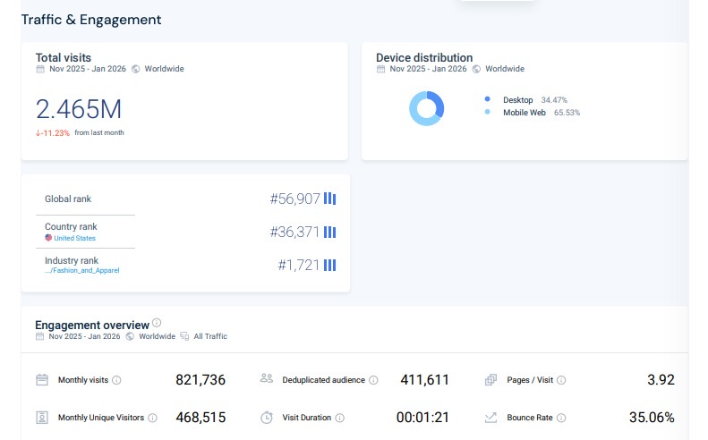
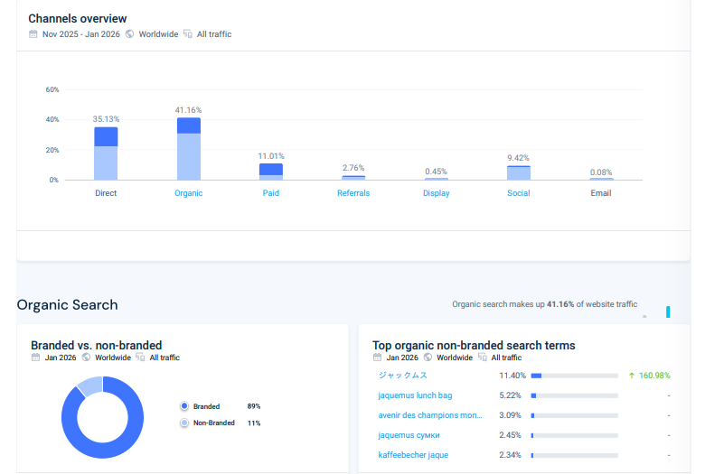
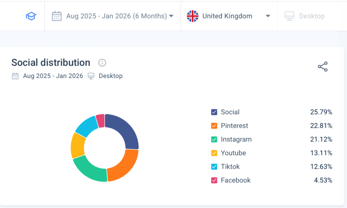
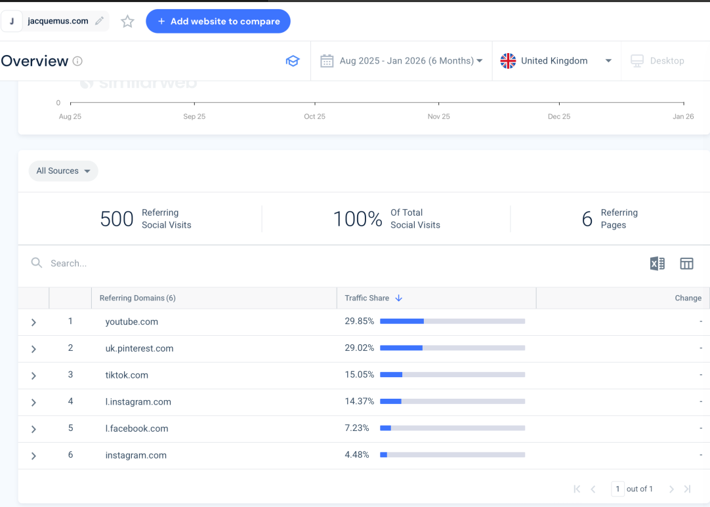
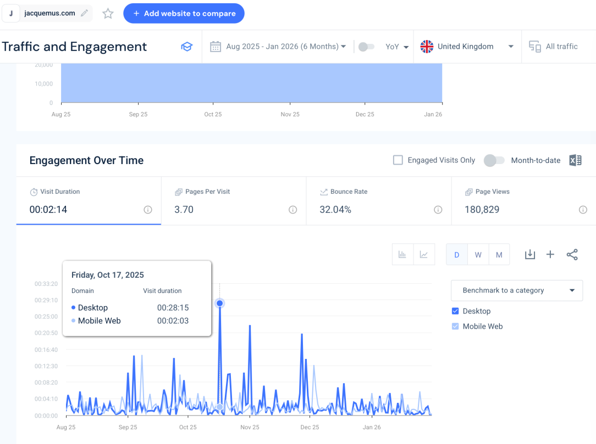
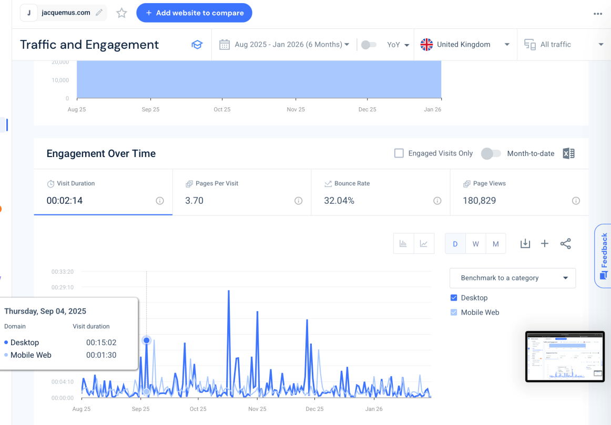
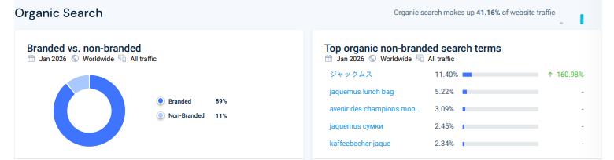

Blog 3: Jacquemus Mastering Social Media for Luxury Fashion
By Ramune Matulyte
Published: March 2026
In the luxury fashion space, scarcity and exclusivity have traditionally been the dominant marketing strategies. Jacquemus, the French fashion house founded by Simon Porte Jacquemus, has rewritten these rules by building a brand that feels both exclusive and intimately accessible through social media. Using Similarweb data and social media analysis, this blog examines how Jacquemus has mastered the art of digital engagement.
The Social-First Brand Philosophy
Jacquemus operates differently from traditional luxury houses. Rather than treating social media as an afterthought, it's central to the brand's identity. The aesthetic is unmistakable: oversaturated colours, Provençal landscapes, surreal proportions (the viral giant straw bags), and a consistent visual language that makes every post instantly recognisable.
As Holt (2016) argues in Harvard Business Review, brands succeed in the age of social media not by controlling their narrative, but by cultivating cultural communities. Jacquemus has built exactly that a community of fans who don't just buy clothing but buy into a lifestyle and aesthetic.
Traffic Overview: A Global Brand with European Roots
The Similarweb data reveals Jacquemus's global reach. From November 2025 to January 2026, the site received 2.465 million visits worldwide, despite a slight month-on-month decline of 11.23%.

Figure 1: Jacquemus’s total visits, globally
The geographic breakdown is particularly revealing:
|
Country |
Traffic Share |
Change |
|
United States |
19.97% |
↑ 10.74% |
|
South Korea |
19.09% |
↑ 35.69% |
|
France |
11.95% |
↑ 19.00% |
|
United Kingdom |
6.08% |
↓ 0.31% |
|
Italy |
5.37% |
↓ 14.06% |
The massive growth in South Korea (35.69%) is particularly noteworthy. It suggests Jacquemus's aesthetic resonates strongly with K-fashion sensibilities, and their social media strategy may be capturing this audience without explicit localisation a testament to visual communication transcending language barriers.
Marketing Channels: How Traffic Finds Jacquemus
The channel breakdown shows a brand with diversified acquisition:
|
Channel |
Share |
|
Direct |
35.13% |
|
Organic Search |
41.16% |
|
Paid Search |
11.01% |
|
Referrals |
2.76% |
|
Social |
9.42% |
|
Display |
0.45% |
|
|
0.08% |
The 41% organic search share is impressive it means nearly half of visitors find Jacquemus through search engines, suggesting strong SEO and brand awareness. The 35% direct traffic indicates a loyal customer base who type the URL or use bookmarks.
Looking specifically at the UK data (August 2025-January 2026), the channel mix shows similar patterns:
|
Channel |
Share |
|
Direct |
35.23% |
|
Organic Search |
32.57% |
|
Paid Search |
20.46% |
|
Referrals |
2.06% |
|
Social |
9.11% |
|
Display |
0.50% |
Hoffman, Novak and Stein (2013), in The Routledge Companion to Digital Consumption, note that digital consumers navigate complex pathways to purchase. Jacquemus's balanced channel mix reflects this reality they're visible wherever potential customers might be searching.
Social Media Distribution: Where Engagement Happens
The social traffic breakdown reveals which platforms drive actual website visits:

Figure: Social Distribution - Desktop
For desktop traffic (August 2025-January 2026):
The Pinterest dominance is fascinating. As a visual discovery platform, Pinterest aligns perfectly with Jacquemus's aesthetic users browsing for fashion inspiration naturally encounter the brand. This suggests Jacquemus's visual content performs well in discovery-oriented contexts, not just direct engagement.
Looking at all social sources (UK data), the platform mix shows similar patterns:


Figure 2: Social Sources - UK
|
Source |
Traffic Share |
|
youtube.com |
Highest |
|
uk.pinterest.com |
Second |
|
tiktok.com |
Third |
|
instagram.com |
Fourth |
Dahl (2021), in Social Media Marketing: Theories and Applications, emphasises that brands must match platform choice to consumer behaviour. Jacquemus's presence across Pinterest (discovery), Instagram (aesthetic showcase), YouTube (storytelling), and TikTok (trend participation) demonstrates sophisticated platform segmentation.
Engagement Metrics: Quality of Interaction
The engagement data shows how visitors behave once they arrive:

Figure 3: Traffic and Engagement - UK
|
Metric |
Value |
|
Visit Duration |
2 minutes 14 seconds |
|
Pages Per Visit |
3.70 |
|
Bounce Rate |
32.04% |
|
Page Views |
180,829 |
A 32% bounce rate is excellent it means two-thirds of visitors explore beyond their entry page. The 3.7 pages per visit suggests effective cross-linking and product discovery.
However, the data reveals interesting mobile vs desktop patterns:

Figure 4: Mobile vs Desktop Duration
On certain dates, desktop users spend dramatically longer 15 minutes 2 seconds on September 4, 2025, compared to just 1 minute 30 seconds on mobile. This suggests Jacquemus's desktop experience may be richer for browsing, while mobile users may be more transaction-focused.
Malthouse et al. (2016) demonstrate that user-generated content producing engagement increases purchase behaviours. Jacquemus excels at encouraging UGC fans photograph themselves with Le Chiquito bags or in Provençal settings, effectively becoming brand ambassadors.
The Branded vs Non-Branded Search Balance
The search data reveals an interesting pattern:

This 89% branded share is unusually high. It means most people searching for Jacquemus already know the brand exists. This reflects successful brand-building Jacquemus has achieved "top-of-mind" awareness in its category.
The top non-branded search terms include:
- ジャックムス (Japanese: "Jacquemus")
- "jaquemus lunch bag"
- "jaquemus сумки" (Russian: "Jacquemus bags")
These are essentially branded misspellings or translations still brand-focused, just with linguistic variation. True non-branded discovery (e.g., "mini leather bag") appears minimal.
Piehler et al. (2019), in their research on consumers' online brand-related activities, note that high branded search share typically indicates strong brand equity. Jacquemus has achieved what most luxury brands aspire to: consumers seek them out by name.
Strategic Analysis: What Jacquemus Does Well
1. Visual Consistency
Every platform carries the same aesthetic: warm, sun-drenched, slightly surreal. This consistency builds recognition a scroll-stopping effect where users recognise Jacquemus content instantly without needing logos.
2. Platform-Specific Adaptation
Rather than cross-posting identical content, Jacquemus adapts:
- Instagram: Polished campaign imagery, behind-the-scenes, runway moments
- TikTok: Playful trends, model dances, behind-the-scenes humour
- Pinterest: Shoppable lookbooks, seasonal inspiration
- YouTube: Campaign films, runway shows, designer interviews
3. Community Building Through UGC
Jacquemus regularly features customer photos, creating a feedback loop where fans aspire to be featured. This generates authentic content while deepening loyalty.
4. Scarcity Marketing
Limited drops and waiting lists create FOMO (fear of missing out). Social media amplifies this when a bag sells out, the announcement itself becomes engagement fuel.
Opportunities for Improvement
1. Increase Non-Branded Discovery
With only 11% non-branded search, Jacquemus is missing customers who don't yet know the brand. Investing in SEO for terms like "summer straw bag" or "mini leather handbag" could capture discovery traffic.
2. Optimise Mobile Experience
The 15-minute desktop vs 90-second mobile gap suggests mobile users may struggle to browse. Given that most social traffic is mobile, improving mobile UX could significantly increase engagement and conversion.
3. Leverage TikTok Shop
With TikTok traffic growing (13% of social visits), integrating TikTok Shop could shorten the purchase journey from discovery to transaction without leaving the app.
4. Expand Asian Market Localisation
The 35% South Korea growth is remarkable without localisation. Dedicated Korean social media accounts or collaborations with K-pop influencers could accelerate this further.
Conclusion
Jacquemus has mastered what Muntinga, Moorman and Smit (2011) term "COBRAs" consumers' online brand-related activities. By creating content that users actively want to consume, contribute to, and create around, the brand has built a community that transcends traditional luxury marketing.
The data confirms success: 2.46 million visitors, 35% direct traffic, and explosive growth in key Asian markets. Yet opportunities remain mobile optimisation, non-branded discovery, and deeper platform integration could take this social-first luxury brand to even greater heights.
As Belk and Llamas (2013) observe in The Routledge Companion to Digital Consumption, digital brand communities represent a fundamental shift in how consumers relate to brands. Jacquemus isn't just participating in this shift it's leading it.
References
- Belk, R.W. and Llamas, R. (eds.) (2013) The Routledge Companion to Digital Consumption. Oxfordshire: Routledge.
- Dahl, S. (2021) Social Media Marketing: Theories and Applications. 3rd edn. London: SAGE.
- Hoffman, D.L., Novak, T.P. and Stein, R. (2013) 'The Digital Consumer', in Belk, R.W. and Llamas, R. (eds.) The Routledge Companion to Digital Consumption. Oxfordshire: Routledge, pp. 28-38.
- Holt, D. (2016) 'Branding in the age of social media', Harvard Business Review, 94, pp. 40-50.
- Malthouse, E.C., Calder, B.J., Kim, S.J. and Vandenbosch, M. (2016) 'Evidence that user-generated content that produces engagement increases purchase behaviours', Journal of Marketing Management, 32(5-6), pp. 427-444.
- Muntinga, D.G., Moorman, M. and Smit, E.G. (2011) 'Introducing COBRAs: Exploring motivations for brand-related social media use', International Journal of Advertising, 30(1), pp. 13-46.
- Piehler, R., Schade, M., Kleine-Kalmer, B. and Burmann, C. (2019) 'Consumers' online brand-related activities (COBRAs) on SNS brand pages', European Journal of Marketing, 53(9), pp. 1833-1853.
- Similarweb (2026). Website Performance. [online] Similarweb website. Available at: https://pro.similarweb.com/#/digitalsuite/websiteanalysis/overview/website-performance/.